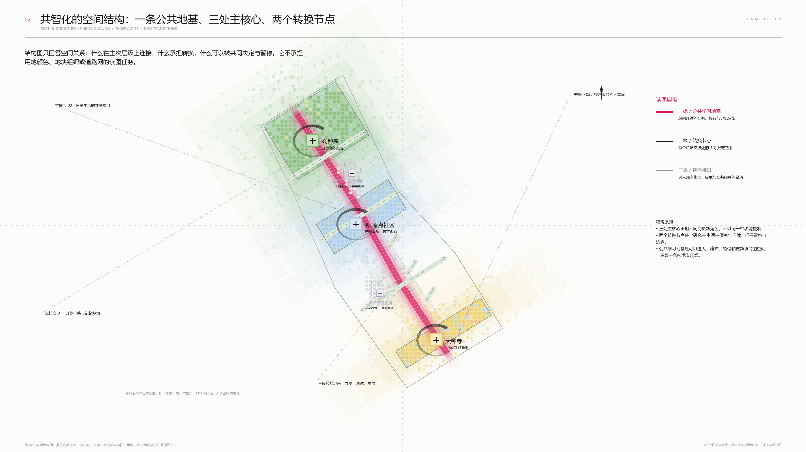
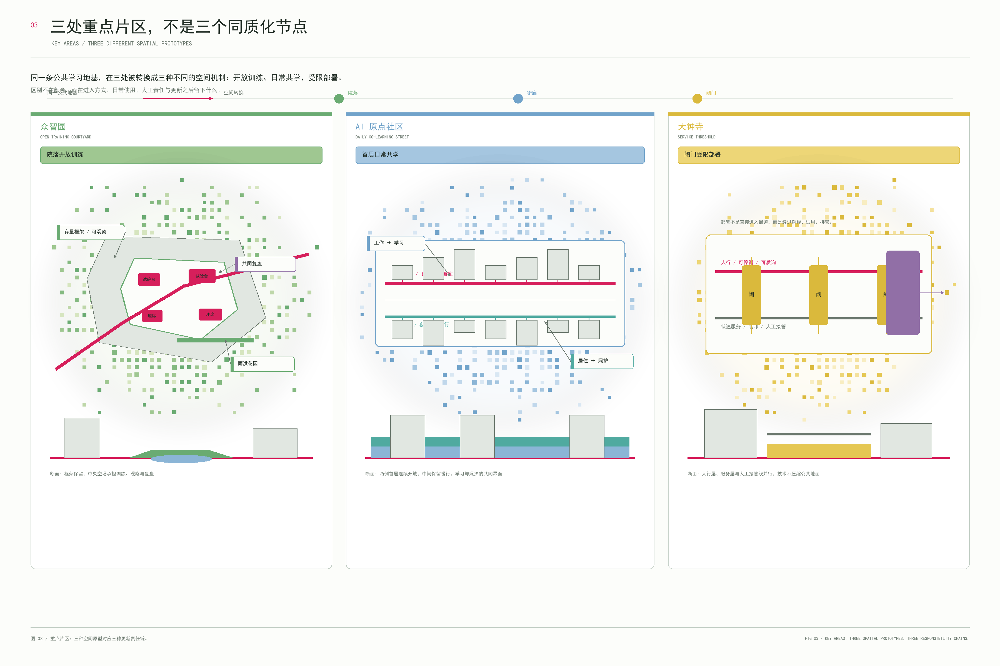
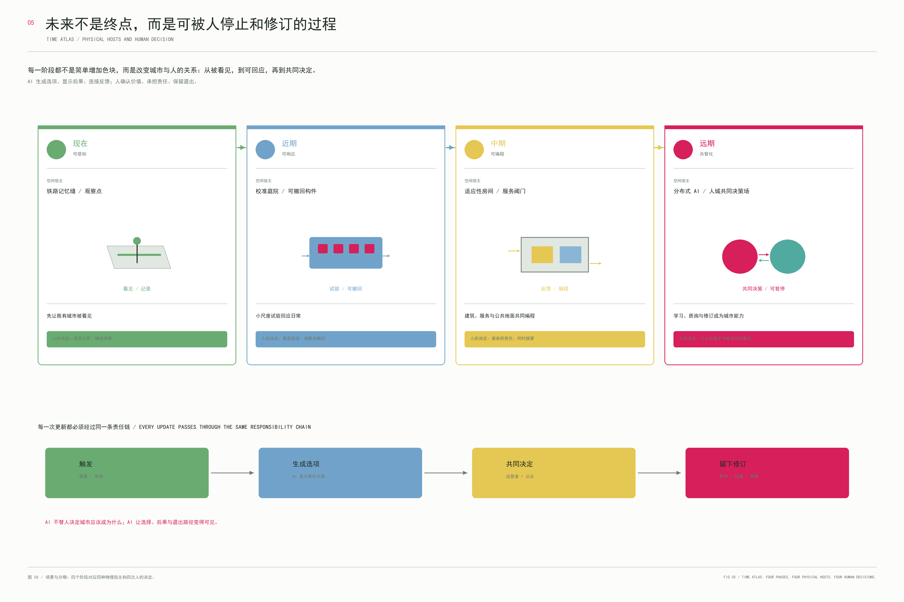

未完成的城市
这不是一张“未来城市已经完成”的效果图，而是一套让既有城市持续被看见、被讨论、被试验、被修订的更新方法。
本页以任务资料库中的暂定范围和重点片区几何作为方案生成、展示与自检约束，不把它们当作精确红线。空间动作均为概念性建议，待官方资料、权属、遗产、道路与工程条件明确后再复核。

用地图：把共智化落到一块真实的地面上
结构图表达关系，用地图表达嵌合。这里的色块不是整齐复制的功能盒子，而是在暂定范围内沿既有道路、公共空间和更新界面展开的概念性用地组织：绿色是公园与开放绿地，蓝色是共学与创新生活混合场，黄色是居住与服务，玫红是公共设施和公共学习地基，紫色是两个需要被重新接通的转换节点。

任务覆盖与自检状态
总览地图、三层范围、重点区域、用地分区、交通慢行、蓝绿公共空间、建筑、更新项目、AI 场景、核心指标、任务覆盖、自检状态、来源与假设均在正式图纸、结构化数据和本页交叉对应。
自检状态：本页为可离线打开的动态展示组件，页面脚本与图片均在提交包内。来源：公开任务书、清权资料包及提交包结构化数据。假设：暂定范围不构成官方红线，所有场景与空间措施均待专业团队及正式资料深化。
动态概念模型：城市不是被完成，而是被持续修订
点击不同阶段，观察同一条更新轴如何从“看见问题”变成“共同维护城市能力”。点击三个核心节点，可读取它们在这套系统中的空间角色。
五张正式图纸，一套可核对的空间叙事
动态页不替代正式提交图纸，而是把图纸、指标和分期关系连成一条可阅读的路径。每张图只承担一个问题：整体如何组织、用地如何嵌合、重点区如何不同、公共地基如何分层、未来如何分期。




体验图：只补充空间气质，不替代正式图纸
这些场景用来说明“可看见、可解释、可接管”的公共空间经验；它们不作为现状、边界、工程或法定控制依据。


成果关系：本页是提交包中的离线动态可视化组件，路径为 visual/index.html；中文报告、正式 PDF、GeoJSON、metrics、matrices 与本页共同组成成果包。本页不依赖 CDN、远程地图、外部字体、接口或追踪服务。
来源与假设：公开任务书、清权资料包及提交包结构化数据。暂定范围、重点片区、道路、建筑、权属、规划控制和工程条件均需在官方资料更新后重新复核。